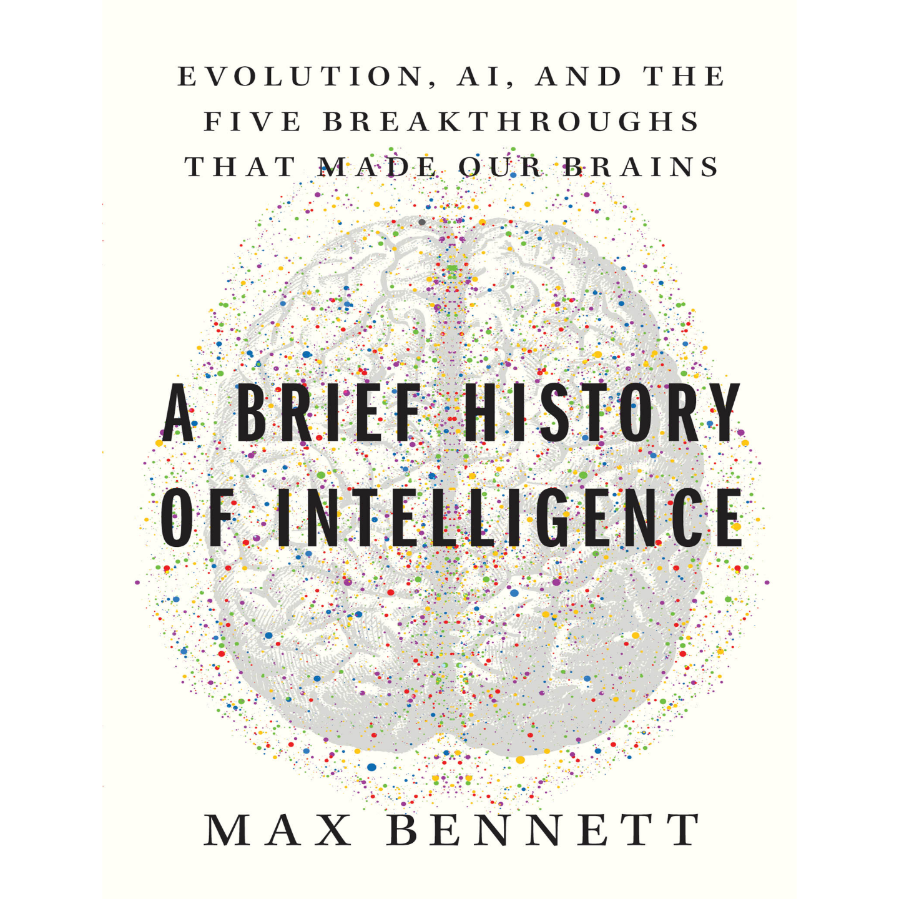

📖《智能简史》由科技创业者 Max Bennett 撰写，系统梳理了智能从原始生命到人工智能的进化历程。作者结合神经科学、进化生物学和认知科学的最新研究成果，提出了智能进化的五个层次框架。
这本书不仅回答了"智能是什么"的问题，更重要的是揭示了"智能是如何一步步演化至今"的历史脉络。对于理解当下人工智能革命的本质，这本书提供了不可或缺的理论与历史视角。
第一层：简单反射——单细胞生物的智能起点。能够感知环境并做出简单反应，是最基础的智能形式。
第二层：条件学习——生物开始能够根据经验调整行为，将特定的刺激与结果关联起来，这是学习能力的雏形。
第三层：记忆与规划——能够存储过去的信息，并基于这些信息模拟未来、制定计划。这一层让生物具备了"超越当下"的能力。
第四层：社会智能——理解他者的心智，预测他人的行为，进行合作与竞争。这是群居动物进化出的关键能力。
第五层：语言与抽象思维——人类独有的能力，通过符号系统传递复杂信息，进行抽象推理和创造性思考。
第六层？——人工智能是否能代表智能进化的下一个阶梯？这正是本书留给读者的开放性问题。
智能的五个层次让人看到智能是如何一步步进化过来的。从最简单的反射到复杂的抽象思维，每一层都是对前一层的超越和整合。
特别是在新的AI时代，我们如何看待这第六阶梯的进化呢？大语言模型展现出的能力，究竟是对人类智能的模仿，还是一种全新的智能形式？这本书为思考这些问题打下了坚实的理论基础。
作者没有给出简单的答案，而是提供了理解智能演化的完整框架。这个框架让我们能够更清晰地定位当下的AI革命——它不是凭空出现的，而是智能漫长进化历程中的最新篇章。